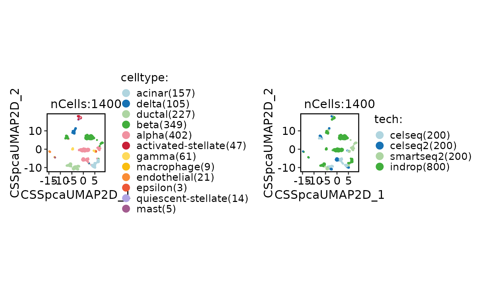
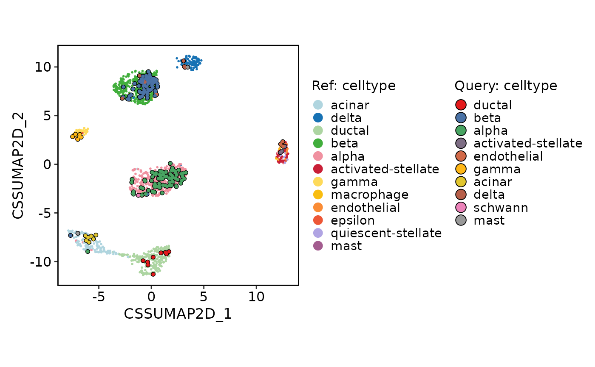

Single-cell reference mapping with CSS method
Usage
RunCSSMap(
srt_query,
srt_ref,
query_assay = NULL,
ref_assay = srt_ref[[ref_css]]@assay.used,
ref_css = NULL,
ref_umap = NULL,
ref_group = NULL,
projection_method = c("model", "knn"),
nn_method = NULL,
k = 30,
distance_metric = "cosine",
vote_fun = "mean"
)Arguments
- srt_query
An object of class Seurat to be annotated with cell types.
- srt_ref
A Seurat object or count matrix representing the reference object. If provided, the similarities will be calculated between cells from the query and reference objects. If not provided, the similarities will be calculated within the query object.
- query_assay
The assay to use for the query object. If not provided, the default assay of the query object will be used.
- ref_assay
The assay to use for the reference object. If not provided, the default assay of the reference object will be used.
- ref_css
The name of the CSS reduction in the reference object to use for calculating the distance metric.
- ref_umap
A character string specifying the name of the UMAP reduction in the reference object. If not provided, the first UMAP reduction found in the reference object will be used.
- ref_group
The grouping variable in the reference object. This variable will be used to group cells in the heatmap columns. If not provided, all cells will be treated as one group.
- projection_method
A character string specifying the projection method to use. Options are "model" and "knn". If "model" is selected, the function will try to use a pre-trained UMAP model in the reference object for projection. If "knn" is selected, the function will directly find the nearest neighbors using the distance metric.
- nn_method
A character string specifying the nearest neighbor search method to use. Options are "raw", "annoy", "rann", and "cpp". If "raw" is selected, the function will use the brute-force method to find the nearest neighbors. If "annoy" is selected, the function will use the Annoy library for approximate nearest neighbor search. If "rann" is selected, the function will use the RANN library for approximate nearest neighbor search. If "cpp" is selected, the function will use the compiled exact top-k search. If not provided, the function will use "cpp" for Euclidean or cosine distance, otherwise it will choose the search method based on the size of the query and reference datasets.
- k
A number of nearest neighbors to find for each cell in the query object.
- distance_metric
The distance metric to use for calculating the pairwise distances between cells. Options include: "pearson", "spearman", "cosine", "correlation", "jaccard", "ejaccard", "dice", "edice", "hamman", "simple matching", and "faith". Additional distance metrics can also be used, such as "euclidean", "manhattan", "hamming", etc.
- vote_fun
A character string specifying the function to be used for aggregating the nearest neighbors in the reference object. Options are "mean", "median", "sum", "min", "max", "sd", "var", etc. If not provided, the default is "mean".
Examples
data(panc8_sub)
panc8_sub <- standard_scop(panc8_sub)
#> ℹ [2026-05-23 14:08:30] Start standard processing workflow...
#> ℹ [2026-05-23 14:08:30] Checking a list of <Seurat>...
#> ! [2026-05-23 14:08:30] Data 1/1 of the `srt_list` is "unknown"
#> ℹ [2026-05-23 14:08:30] Perform `NormalizeData()` with `normalization.method = 'LogNormalize'` on 1/1 of `srt_list`...
#> ℹ [2026-05-23 14:08:32] Perform `Seurat::FindVariableFeatures()` on 1/1 of `srt_list`...
#> ℹ [2026-05-23 14:08:33] Use the separate HVF from `srt_list`
#> ℹ [2026-05-23 14:08:33] Number of available HVF: 2000
#> ℹ [2026-05-23 14:08:33] Finished check
#> ℹ [2026-05-23 14:08:33] Perform `Seurat::ScaleData()`
#> ℹ [2026-05-23 14:08:33] Perform pca linear dimension reduction
#> ℹ [2026-05-23 14:08:34] Use stored estimated dimensions 1:27 for Standardpca
#> ℹ [2026-05-23 14:08:34] Perform `Seurat::FindClusters()` with `cluster_algorithm = 'louvain'` and `cluster_resolution = 0.6`
#> ℹ [2026-05-23 14:08:34] Reorder clusters...
#> ℹ [2026-05-23 14:08:35] Skip `log1p()` because `layer = data` is not "counts"
#> ℹ [2026-05-23 14:08:35] Perform umap nonlinear dimension reduction
#> ℹ [2026-05-23 14:08:35] Perform umap nonlinear dimension reduction using Standardpca (1:27)
#> ℹ [2026-05-23 14:08:40] Perform umap nonlinear dimension reduction using Standardpca (1:27)
#> ✔ [2026-05-23 14:08:45] Standard processing workflow completed
srt_ref <- panc8_sub[, panc8_sub$tech != "fluidigmc1"]
srt_query <- panc8_sub[, panc8_sub$tech == "fluidigmc1"]
srt_ref <- integration_scop(
srt_ref,
batch = "tech",
integration_method = "CSS"
)
#> ◌ [2026-05-23 14:08:45] Run integration workflow...
#> ℹ [2026-05-23 14:08:45] Split `srt_merge` into `srt_list` by "tech"
#> ℹ [2026-05-23 14:08:46] Checking a list of <Seurat>...
#> ℹ [2026-05-23 14:08:46] Data 1/4 of the `srt_list` has been log-normalized
#> ℹ [2026-05-23 14:08:46] Perform `Seurat::FindVariableFeatures()` on 1/4 of `srt_list`...
#> ℹ [2026-05-23 14:08:47] Data 2/4 of the `srt_list` has been log-normalized
#> ℹ [2026-05-23 14:08:47] Perform `Seurat::FindVariableFeatures()` on 2/4 of `srt_list`...
#> ℹ [2026-05-23 14:08:47] Data 3/4 of the `srt_list` has been log-normalized
#> ℹ [2026-05-23 14:08:47] Perform `Seurat::FindVariableFeatures()` on 3/4 of `srt_list`...
#> ℹ [2026-05-23 14:08:48] Data 4/4 of the `srt_list` has been log-normalized
#> ℹ [2026-05-23 14:08:48] Perform `Seurat::FindVariableFeatures()` on 4/4 of `srt_list`...
#> ℹ [2026-05-23 14:08:49] Use the separate HVF from `srt_list`
#> ℹ [2026-05-23 14:08:49] Number of available HVF: 2000
#> ℹ [2026-05-23 14:08:50] Finished check
#> ℹ [2026-05-23 14:09:06] Perform ScaleData
#> ℹ [2026-05-23 14:09:07] Perform "pca" linear dimension reduction
#> ℹ [2026-05-23 14:09:07] Perform CSS integration
#> ℹ [2026-05-23 14:09:07] Using "CSSpca" (1:19) as input
#> Loading required package: Seurat
#> Loading required package: SeuratObject
#> Loading required package: sp
#>
#> Attaching package: ‘sp’
#> The following object is masked from ‘package:IRanges’:
#>
#> %over%
#>
#> Attaching package: ‘SeuratObject’
#> The following object is masked from ‘package:SummarizedExperiment’:
#>
#> Assays
#> The following object is masked from ‘package:GenomicRanges’:
#>
#> intersect
#> The following object is masked from ‘package:Seqinfo’:
#>
#> intersect
#> The following object is masked from ‘package:IRanges’:
#>
#> intersect
#> The following object is masked from ‘package:S4Vectors’:
#>
#> intersect
#> The following object is masked from ‘package:BiocGenerics’:
#>
#> intersect
#> The following objects are masked from ‘package:base’:
#>
#> intersect, t
#>
#> Attaching package: ‘Seurat’
#> The following object is masked from ‘package:SummarizedExperiment’:
#>
#> Assays
#> ℹ [2026-05-23 14:09:08] Adjust neighbor k from 20 to 20 for small-sample clustering
#> ℹ [2026-05-23 14:09:09] Perform `Seurat::FindClusters()` with "louvain"
#> ℹ [2026-05-23 14:09:09] Reorder clusters...
#> ℹ [2026-05-23 14:09:09] Skip `log1p()` because `layer = data` is not "counts"
#> ℹ [2026-05-23 14:09:09] Perform umap nonlinear dimension reduction using CSS (1:24)
#> ℹ [2026-05-23 14:09:14] Perform umap nonlinear dimension reduction using CSS (1:24)
#> ℹ [2026-05-23 14:09:19] Perform umap nonlinear dimension reduction using Standardpca (1:27)
#> Warning: Key ‘StandardpcaUMAP2D_’ taken, using ‘standardpcaumap2d_’ instead
#> ✔ [2026-05-23 14:09:25] CSS integration completed
CellDimPlot(srt_ref, group.by = c("celltype", "tech"))

# Projection
srt_query <- RunCSSMap(
srt_query = srt_query,
srt_ref = srt_ref,
ref_css = "CSS",
ref_umap = "CSSUMAP2D"
)
#> ℹ [2026-05-23 14:09:26] Data type is log-normalized
#> ℹ [2026-05-23 14:09:26] Detected `srt_query` data type: "log_normalized_counts"
#> ℹ [2026-05-23 14:09:26] Data type is log-normalized
#> ℹ [2026-05-23 14:09:26] Detected `srt_ref` data type: "log_normalized_counts"
#> ℹ [2026-05-23 14:09:26] Run CSS projection
#> ℹ [2026-05-23 14:09:26] Run UMAP projection
#> ℹ [2026-05-23 14:09:26] Use the reduction to calculate distance metric
#> ℹ [2026-05-23 14:09:26] Use cpp method to find neighbors
#> ℹ [2026-05-23 14:09:26] Running UMAP projection
ProjectionPlot(
srt_query = srt_query,
srt_ref = srt_ref,
query_group = "celltype",
ref_group = "celltype"
)
#> Scale for x is already present.
#> Adding another scale for x, which will replace the existing scale.
#> Scale for y is already present.
#> Adding another scale for y, which will replace the existing scale.
#> Warning: Removed 2 rows containing missing values or values outside the scale range
#> (`geom_point()`).
#> Warning: Removed 2 rows containing missing values or values outside the scale range
#> (`geom_point()`).
